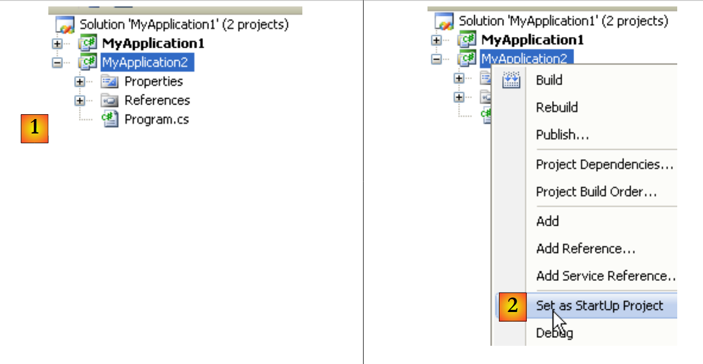
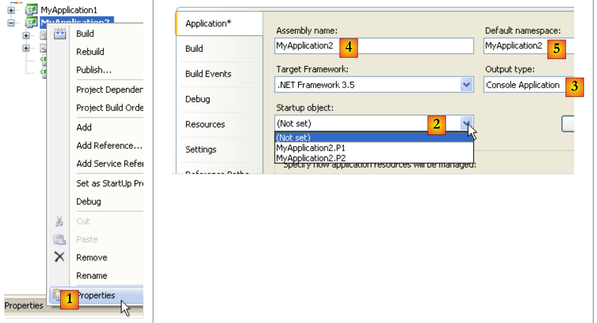

2. Installazione di Visual C# 2008
Alla fine di gennaio 2008, le versioni Express di Visual Studio 2008 erano disponibili per il download [2] al seguente indirizzo [1]: [http://msdn2.microsoft.com/en-fr/express/future/default(en-us).aspx] :
 |
- [1]: indirizzo per il download
- [2]: scheda Download
- [3]: scarica C# 2008
Quando installi C# 2008, installerai anche:
- il framework .NET 3.5
- il SGBD SQL Server Compact 3.5
- la documentazione MSDN
Per creare il tuo primo programma con C# 2008, procedi come segue dopo aver avviato C# :
 |
- [1]: selezionare l'opzione File / Nuovo progetto
- [2]: scegli un'applicazione Console
- [3]: assegna un nome al progetto - verrà modificato in seguito
- [4]: conferma
- [4b]: il progetto è stato creato
- [4c]: Program.cs è il programma C# generato di default nel progetto.
 |
- Il passaggio 1 non ha chiesto dove salvare il progetto. Se non facciamo nulla, verrà salvato in una posizione predefinita che probabilmente non ci andrà bene. L'opzione [5] serve a salvare il progetto in una cartella specifica.
- È possibile assegnare un nuovo nome al progetto in [6] e specificarne la cartella in [7]. Per farlo, è possibile utilizzare [8]. Se si sceglie qui, il progetto finirà nella cartella [C:\temp\08-01-31MyApplication1].
- Selezionando [9], è possibile creare una cartella per la soluzione denominata in [10]. Se Solution1 è il nome della soluzione:
- verrà creata una cartella [C:\temp\08-01-31\Solution1] per la soluzione Solution1
- verrà creata una cartella [C:\temp\08-01-31\Solution1\MyApplication1] per il progetto MyApplication1. Questa soluzione è particolarmente adatta alle soluzioni composte da diversi progetti. Ogni progetto avrà una sottocartella nella cartella della soluzione.
 |
- in [1]: la finestra del file del progetto MyApplication1
- in [2]: il suo contenuto
- in [3]: il progetto nell'Esplora progetti di Visual Studio
Modifichiamo il codice del file [Program.cs] [3] come segue:
using System;
namespace ConsoleApplication1 {
class Program {
static void Main(string[] args) {
Console.WriteLine("1er essai avec C# 2008");
}
}
}
- riga 3: lo spazio dei nomi della classe definita alla riga 4. Il nome completo della classe definita alla riga 4 è qui ConsoleApplication1.Program.
- righe 5-7: il metodo statico Main che viene eseguito quando l'esecuzione di un
- riga 6: una visualizzazione sullo schermo
Il programma può essere eseguito come segue:
 |
- [Ctrl-F5] per eseguire il progetto; in [1]
- in [2], si ottiene la visualizzazione della console.
L'esecuzione ha aggiunto dei file al:
 |
- in [1], visualizza tutti i file di progetto
- in [2]: la cartella [Release] contiene l'eseguibile del progetto [MyApplication1.exe].
- in [3]: la cartella [Debug], che conterrebbe anche un eseguibile [MyApplication1.exe] del progetto se fosse stato eseguito in modalità [Debug] (tasto F5 invece di Ctrl-F5). Questo non è lo stesso eseguibile ottenuto in modalità [Release]. Contiene informazioni aggiuntive che consentono lo svolgimento del processo di debug.
È possibile aggiungere un nuovo progetto alla soluzione corrente:
 |
- [1]: clicca con il tasto destro sulla soluzione (non sul progetto) / Aggiungi / Nuovo progetto
- [2]: selezionare un tipo di applicazione
- [3]: la cartella predefinita è quella che contiene la cartella del progetto esistente [MyApplication1]
- [4]: assegnare un nome al nuovo progetto
La soluzione ora contiene due progetti:
 |
- [1]: il nuovo progetto
- [2]: quando la soluzione viene eseguita utilizzando (F5 o Ctrl-F5), viene eseguito uno dei progetti. Questo è denominato [2].
Un progetto può avere diverse classi eseguibili (contenenti un metodo Main). In questo caso, è necessario specificare la classe da eseguire all'avvio del progetto:
 |
- [1, 2]: copia/incolla il file [Program.cs]
- [3]: copia/incolla del risultato
- [4,5]: rinominare i due file
 |
Classe P1 (riga 4):
using System;
namespace MyApplication2 {
class P1 {
static void Main(string[] args) {
}
}
}
Classe P2 (riga 4):
using System;
namespace MyApplication2 {
class P2 {
static void Main(string[] args) {
}
}
}
Il progetto [MyApplication2] ora contiene due classi con un metodo statico Main. È necessario specificare al progetto quale delle due:
 |
- in [1]: proprietà del progetto [MyApplication2]
- in [2]: selezionare la classe da eseguire all'avvio del progetto (F5 o Ctrl-F5)
- in [3]: tipo di eseguibile prodotto - in questo caso un'applicazione Console produrrà un file .exe.
- in [4]: il nome dell'eseguibile prodotto (senza l'estensione .exe)
- in [5]: lo spazio dei nomi predefinito. Questo è quello che verrà generato nel codice di ogni nuova classe aggiunta al progetto. Può poi essere modificato direttamente nel codice, se necessario.